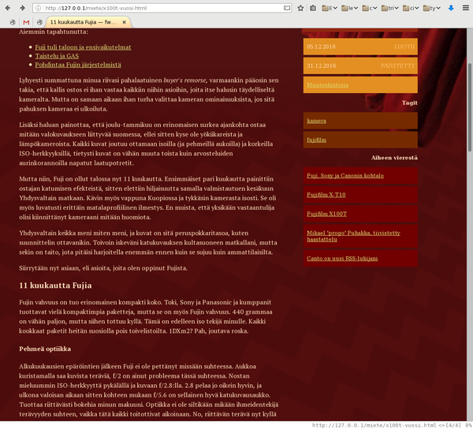
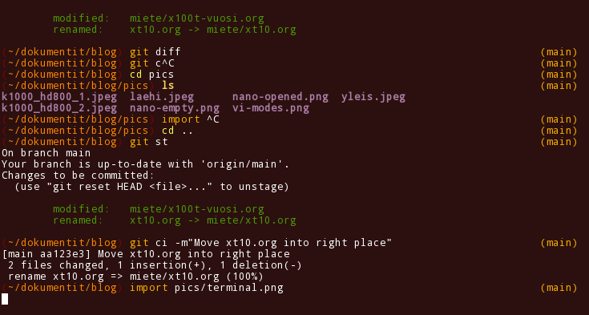
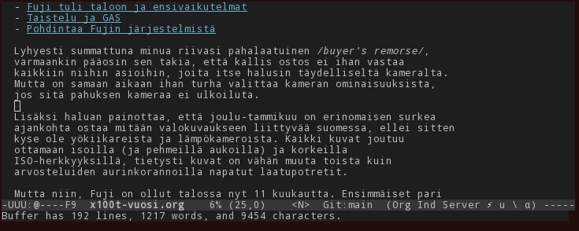
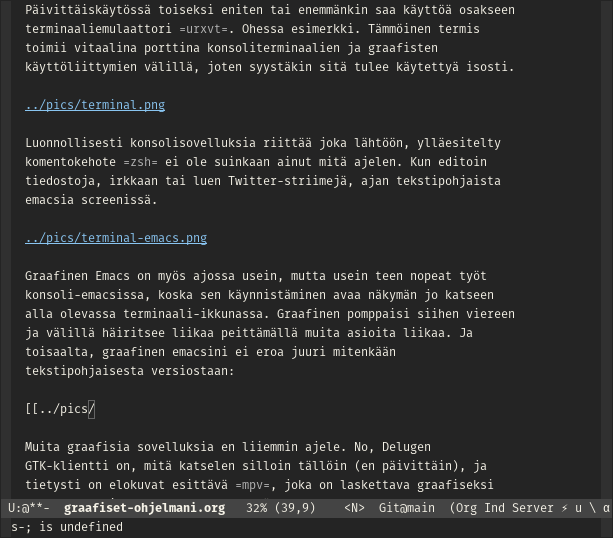

Graafiset päivittäissovellukseni
Tajusin hiljan, että vaikka iso osa päivittäisistä ATK-askareistani tapahtuukin graafisten WIMP-käyttöliittymien parissa, lukumäärällisesti päivittäiskäytössä minulla on vain 2-3 sovellusta. Riippuu kyllä isosti laskentatavasta. Toisaalta kun mietin asiaa, tavallisella tallaajalla ei taida olla yhtään sen useampaa sovellusta käytössään myöskään!
Verkkoselainhan se syö nykyisin lähes kaikki tietokoneen funktiot, kuin myös minulla. Firefox puuskuttaa ja tarjoilee minulle niin WWW:n kuin sähköpostin, RSS-aggregaatioiden kuin uutisryhmien vastineetkin.

Päivittäiskäytössä toiseksi eniten tai enemmänkin saa käyttöä osakseen
terminaaliemulaattori urxvt. Ohessa esimerkki. Tämmöinen termis
toimii vitaalina porttina konsoliterminaalien ja graafisten
käyttöliittymien välillä, joten syystäkin sitä tulee käytettyä isosti.

Luonnollisesti konsolisovelluksia riittää joka lähtöön, ylläesitelty
komentokehote zsh ei ole suinkaan ainut mitä ajelen. Kun editoin
tiedostoja, irkkaan tai luen Twitter-striimejä, ajan tekstipohjaista
emacsia screenissä.

Graafinen Emacs on myös ajossa usein, mutta usein teen nopeat työt konsoli-emacsissa, koska sen käynnistäminen avaa näkymän jo katseen alla olevassa terminaali-ikkunassa. Graafinen pomppaisi siihen viereen ja välillä häiritsee liikaa peittämällä muita asioita liikaa. Ja toisaalta, graafinen emacsini ei eroa juuri mitenkään tekstipohjaisesta versiostaan:

Muita graafisia sovelluksia en liiemmin ajele. No, Delugen
GTK-klientti on, mitä katselen silloin tällöin (en päivittäin), ja
tietysti on elokuvat esittävä mpv, joka on laskettava graafiseksi
sovellukseksi. DVD:t katson VLC:llä.
Teknisesti ottaen minulla on päivittäin ajossa monia graafisia ohjelmia tähän päälle: niin ikkunanhallinta Xmonad kuin sen pikkuapulainen Xmobar, ynnä pari instanssia Conky-tilastopiirtimestä. Lähes päivittäin käynnistelen myös graafisia ohjelmia, joka tapahtuu graafisella Dmenu-ohjelmalla. Ei niitä montaa ole niitäkään sitten loppupeleissä.